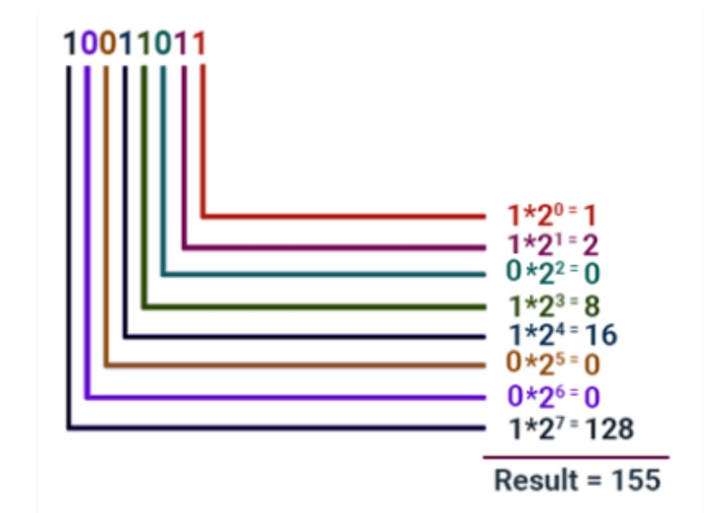

Understanding Binary Conversion
Binary conversion is essential in the digital world. It's the process of transforming data from the decimal system, which is based on the number 10, into the binary system, which is based on the number 2. This process is crucial because computers and electronic systems process and store all information in binary format.
Understanding binary conversion allows programmers and engineers to interact with computers on the most fundamental level, optimizing algorithms and understanding the intricacies of digital data processing.
Methods of Binary Conversion
Converting decimal numbers to binary involves several methods:
- Division-Remainder Method: Divide the number by 2 and write down the remainder. Repeat with the quotient until you reach 0, then read the remainders backward.
- Subtraction Method: Subtract the largest power of 2 until you reach 0, marking a 1 for each subtraction and a 0 where no subtraction is made.
- Double Dabble: A technique often used in embedded systems for its efficiency without division operations.
These methods are foundational for computer science students and professionals working with low-level programming or hardware design.